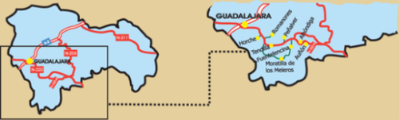

Mapa

Gasolineras que hay en el itinerario:
- Cueva del Toro, Ctra de Cuenca. N – 320 | Km. 276 | Tfno. 949 22 49 06
- Fuentenpalme. Ctra. de Cuenca N – 320 | Km. 118 | Tfno. 949 29 52 02 / 949 29 52 81
- El Berral. Ctra. de Cuenca N – 320 | Km 239.5 | Tfno. 949 28 41 24
- En Sacedón. Ctra de Cuenca. N – 320 | Km. 222 | Tfno 949 35 00 94